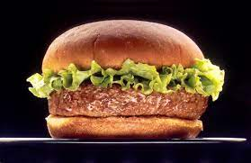

Return to home
Burger recipe!

Description
Make burgers your way and have them come out flawless every time with what I consider to be the Best Hamburger Patty Recipe, in my humble opinion.
Ingredients
- 2 pounds ground chuck
- 1/2 cup crushed saltine crackers
- 1 large egg
- 2 tablespoons Worcestershire sauce
- 2 tablespoons milk
- 1 tsp salt
- 1/2 teaspoon ground black pepper
- 1 teaspoon garlic powder
- 1 teaspoon onion powder
Steps
- Set out a large mixing bowl. Add in the ground beef, crushed crackers, egg, Worcestershire sauce, milk, salt, garlic powder, onion powder, and pepper. Mix by hand until the meat mixture is smooth, but stop once the mixture looks even. (Overmixing can create a dense heavy texture.)
- Press the meat down in the bowl, into an even disk. Use a knife to cut and divide the hamburger patty mixture into 6 – 1/3 pound grill or skillet patties, or 12 thin griddle patties.
- Set out a baking sheet, lined with wax paper or foil, to hold the patties. One at a time, gather the patty mix and press firmly into patties. Shape them just slightly larger than the buns you plan to use, to account for shrinkage during cooking. Set the patties on the baking sheet. Use a spoon to press a dent in the center of each patty so they don't puff up as they cook. If you need to stack the patties separate them with a sheet of wax paper.
- Preheat the grill or a skillet to medium heat. (Approximately 350-400 degrees F.)
- For thick patties: Grill or fry the patties for 3-4 minutes per side.
- For thin patties: cook on the griddle for 2 minutes per side.